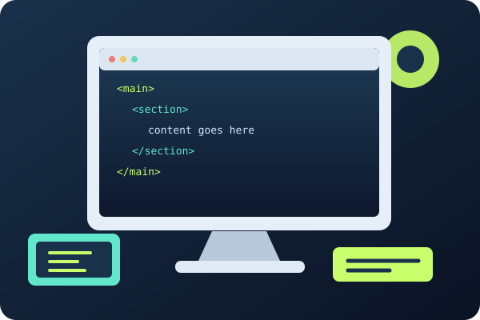

Большое изображение

Нажмите на изображение, чтобы открыть оригинал в новой вкладке.
Открыть оригинал ↗Изображения можно оформлять как ссылку, создавать миниатюру и размещать графику внутри ячеек таблицы.

Нажмите на изображение, чтобы открыть оригинал в новой вкладке.
Открыть оригинал ↗
Размер миниатюры: 100 × 67 пикселей.
| Элемент | Назначение | Пример |
|---|---|---|
| HTML | Структура страницы | Подробнее ↗ |
| CSS | Оформление |  |
| JavaScript | Интерактивность | Подробнее ↗ |
Фоновое изображение таблицы загружается из папки assets.